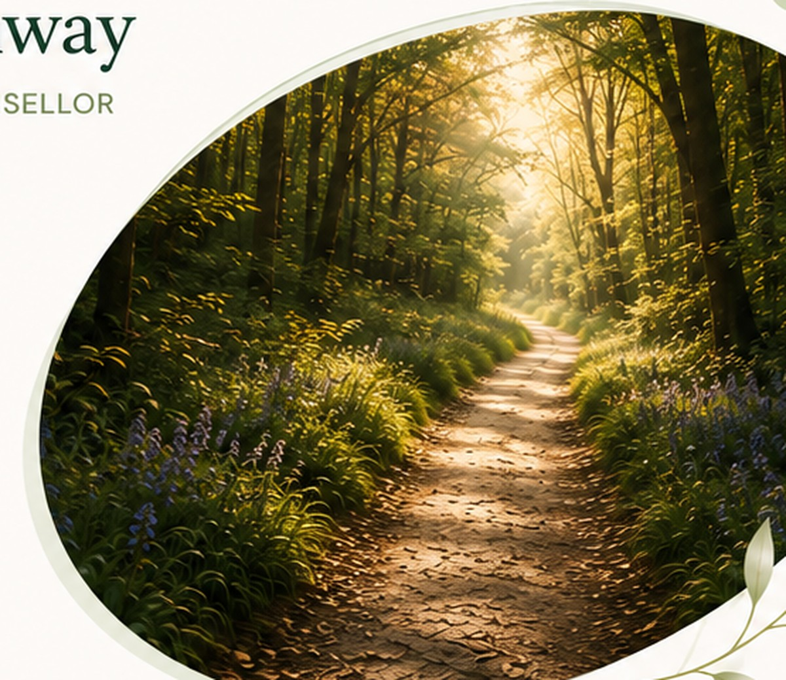

Online and Walk & Talk person-centred counselling
It might feel like you're alone.
You're not.
I'm Janine Conway, a person-centred counsellor based in Ramsbottom. I offer online and Walk & Talk counselling where you can talk openly about whatever is happening for you, without judgement or pressure to have everything figured out.
Get in touchHelping you move forward.

How I can help
Some of the things we can explore together
Anxiety
Depression & low mood
Trauma & difficult experiences
Grief & loss
Shame & self-esteem
Feeling stuck
Relationships
Life changes
Disability & adjustment
Visual impairment & sight loss
Caring responsibilities
Stress & burnout
Making different life choices
Offending & making different choices
Young adults (18+)
Counselling in a way that works for you
I'm based in Ramsbottom, Greater Manchester. I offer online counselling for adults aged 18+ across the UK, alongside Walk & Talk counselling at selected outdoor locations in Ramsbottom, Bury, Bolton and Central Manchester.